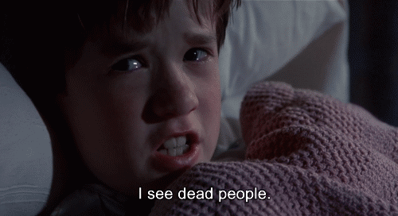
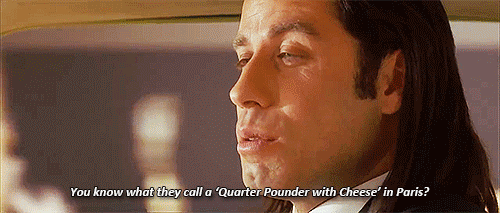
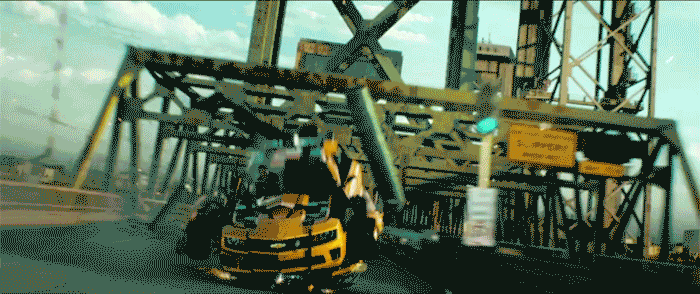
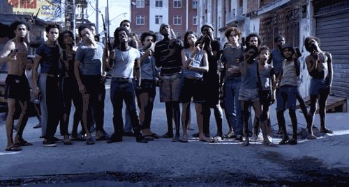
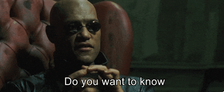
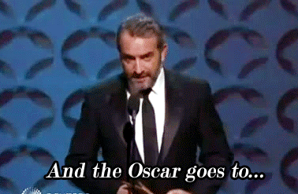

Questão 1 - Shyamalan

Shyamalan, diretor, tem um catálogo de filmes bem peculiares, surpreendentes e únicos como Fragmentado e O Sexto Sentido, ele se consolidou no mundo do cinema com uma técnica de direção que todos os seus filmes carregam, qual o nome dessa técnica?
Questão 2 - Pulp Fiction

Em Pulp Fiction, de Quentin Tarantino, Vincent Vega (John Travolta) e Jules (Samuel L. Jackson) começam uma conversa sobre hambúrgueres com Brett, que esta no banco traseiro, até que Jules pergunta a Brett como que o Quarteirão com Queijo se chama na França, qual o nome do lanche em francês e porque ele tem esse nome?
Questão 3 - Michael Bay

Michael Bay é um famoso diretor que ficou mundialmente conhecido no mercado de Blockbusters a partir de suas produções "espetáculos", explosões e efeitos especiais, qual desses filmes não faz parte de sua franquia?
Questão 4 - Cinema Brasileiro

Por incrível que pareça, o cenário cinematográfico brasileiro é repleto de arte e filmes renomados, com alguns até sendo indicados ao Oscar. Qual flme brasileiro a seguir recebeu uma indicação ao Oscar?
Questão 5 - Star Wars
Em Star Wars, Luke Skywalker esta sempre acompanhado de 2 companheiros robóticos, quais os seus respectivos nomes?
Questão 6 - História do Cinema

Em 28 de Dezembro de 1895, os Irmãos Lumiere iam mudar a história do mundo com o primeiro filme ja feito, qual era o nome desse filme?
Questão 7 - Jim Carrey
Jim Carrey é um dos atores mais amados de Hollywood, porém, o que muita gente não sabe, é que alem de um grande repertório de comédia, ele também tem um enorme repertório de filmes com muita carga dramática, qual desses filmes não foi estrelado por ele?
Questão 8 - Matrix

Em Matrix, Morpheus oferece a Neo duas pílulas; uma que vai levá-lo a "toca do coelho", e a outra que vai leva-lo de volta a sua vida normal, quais as cores das duas pílulas, respectivamente?
Questão 9 - Oscar

O Oscar é, sem dúvidas, a premiação mais famosa do cinema, nomeando grandes filmes a cada ano, qual foi o filme que mais levou estatuetas neste evento?
Questão 10 - Cinema Indiano

A Índia é um dos países mais populosos do mundo, somando mais de 1 bilhão de habitantes, ela é tão grande e tão influente que tem sua própria indústria cinematográfica, qual o nome dela?